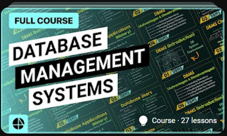

Course Overview
This Data Science with Python course covers essential data analysis, visualization, and machine learning techniques using Python. Ideal for aspiring data scientists and analysts.
What You Will Learn
- Data manipulation with Pandas
- Data visualization with Matplotlib and Seaborn
- Statistical analysis and hypothesis testing
- Machine learning algorithms and applications
- Building predictive models
Course Duration
Approximately 60 hours of content
Instructor
Emily Johnson, Data Scientist